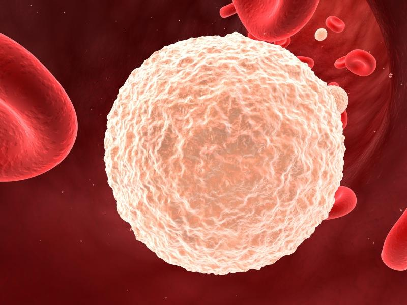

La sangre es ese líquido rojo impulsado por el corazón. Es un tejido que transporta O2 y nutrientes entre otras cosas por todo el cuerpo.
Nuestra sangre se divide en tres tipos de celulas.
Plasma Plaquetas Eritrocitos y Leucocitos

ERITROCITOS: Los glóbulos rojos, también llamados eritrocitos o hematíes, son las células sanguíneas más abundantes y relativamente pequeñas de los mamíferos. Su principal misión es transportar O2 y CO2 entre los tejidos y los pulmones.
LEUCOCITOS: Los leucocitos son parte del sistema inmunitario del cuerpo y ayudan a combatir infecciones y otras enfermedades. Hay varios tipos, aunque profundizaremos sobre esto más adelante.
Cada sangre es diferente, no es tan simple como una célula sin núcleo que reparte O2 y nutrientes por el cuerpo. En este caso, los globulos rojos o eritrocitos, además de esas funciones, tiene antígenos que marcan que grupo sanguíneo eres.
Seguro que has oido mas de una vez a alguien decir que es A B o 0, ademas de acompañarlo con un negativo o positivo.
Empecemos por el significado de cada letra.
Nuestras células contienen lo que llamamos antígenos en su membrana, los cuales indican a que grupo sanguíneo pertenecemos. Es decir, si mi sangre tiene los antígenos A, mi sangre pertenecerá al grupo sanguíneo A
¿Puedo tener las dos letras o ninguna?
Sí, asi es. Puedes tener los dos tipos de antigenos (siendo asi del grupo AB) o ninguno (siendo asi del grupo 0).
Aqui tienes una imagen de los grupos sanguíneos posibles. Aunque hay que decir que existen mas de 300 grupos diferentes, usamos los de este esquema de manera global.
¿Qué es ser positivo o negativo?
Se le llama Rh. Es una proteina que si la tienes en la sangre, eres positivo. (por ejemplo, pasarias de A a A+.)y si hay ausencia de la proteina, pasarias a ser un Rh -( por ejemplo, si eres A y no tienes Rh, pasarias a ser A-).
¿Qué significa ser donante y receptor universal?
Existen dos grupos que son considerados como donante y receptor universal.Siendo el AB+ el receptor universal, puede recibir todo tipo de grupos sanguíneos pero solo puede donar a grupos como el suyo. Mientras que el 0- puede donar a todos los grupos sanguíneos pero solo puede recibir de si mismo.
¿Cómo actua nuestra sangre con los otros grupos?
Nuestra sangre es como una aduana cuando recibimos los diferentes grupos sanguíneos del exterior. No saber el grupo sanguíneo y por tanto hacer una donación errónea, puede llegar a provocar la muerte con facilidad.